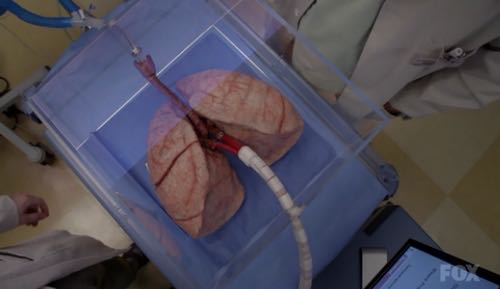

你好，欢迎来到《医学通识50讲》，我是薄世宁。
在上一章，咱们说到了疾病的原理。
今天开始，咱们进入新的一章。
在这一章我会从医生的视角，带你理解诊断和治疗的逻辑。
医生奉为法宝的指南是怎么来的？
药是怎么研发的，为什么药会有副作用？
在对抗疾病过程中，医院和公共卫生体系分别起了什么作用？
这几节下来，你就完全掌握各种医疗活动的实质了。
今天，咱们就从医生诊断疾病的思维模式开始讲起。
很多人把诊断的过程比喻成案件侦破，确实，两者还真有很多相似的地方。
你可能知道神探福尔摩斯的原型，就是英国爱丁堡大学的外科医生，塑造福尔摩斯的作者，同样也是医生。
无论破案还是诊断，都有高手。
你可能看过美剧《豪斯医生》（House M.D.），豪斯医生就是诊断高手。
今天这节课和以前的都不同，咱们来一次病例讨论。
把《豪斯医生》里面的一个极端病例拿出来，说说医生诊断过程的三个环节，以及高手必备的三个能力。
理解了医生的诊断思路，肯定对你也会很有帮助。
给一个不会说话的肺诊断疾病
为什么说这个病例极端呢？
第一，来看病的不是人而是一个不能说话的肺。
肺的主人已经去世了，但是还有另外一个病人等着移植这个肺。
第二，时间急迫。
12个小时之内，豪斯医生必须给这个肺确诊得了什么病。
因为肺离开人体很快就会坏死，关键是等着移植这个肺的病人也生命垂危。超过了时间，这个病人也只能死。

这就是眼下要处理的情况。越是极端的病例，越能让咱们清晰地看出医生的逻辑思维。
这个肺的主人是一个18岁的美国少年。
他去参加同学聚会，聚会结束之后被送到医院，发现全身很多器官都衰竭了。肝衰竭、肾衰竭，而且已经发生了脑死亡，但是肺还好。
在后面的课程里咱们会说到，脑死亡就是死亡，但是死者健康的器官还可以移植给其他病人。
他的父亲虽然悲痛，但是依然要求医院把这个孩子的肺移植给需要的人。
接下来是重点。
当医生切下这个孩子的肺准备移植的时候，发现这个肺变得很硬，不能用了。
我解释一下，正常的肺弹性很好，这样才能保证氧气交换到血里。
这个切下来的肺变得很硬，气道阻力很大，所以氧气根本进不到血里。这样的肺肯定不能用。
所以，在移植之前，豪斯医生必须快速给这个肺诊断出是什么病，而且还得治好。
提出假设-收集证据-验证假设的循环
接下来我介绍一下医生诊断的思维模式。
概括来讲，这个模式包括三个环节，分别是：提出假设，收集证据，验证假设。
先说提出假设。
提出假设的实质就是用一个医学诊断去匹配病人描述的症状和不适。
从提出假设这个环节，就能看出来是不是高手了。
低手是大海捞针，高手具备一定的知识储备和经验，他提的假设更接近真相。
比如，有一个胖胖的已经生过小孩的中年女性说她右上腹疼痛。
没经验的医生怕遗漏，可能就会把所有肚子疼的相关检查都做了。
而高手会马上假设她会不会是胆囊炎呢？然后让病人做一个超声、血常规，立刻就能确诊了。
因为，有的专家把这类病人的特点总结成了4个以“F”打头的英文单词：
Female（女性）
Forties（40岁左右）
Fat（肥胖）
Fertile（生过几次孩子）
符合“F4”特点的病人患胆囊炎的概率比其他病人高。这个病人又恰好是右上腹疼，所以医生会优先考虑是不是胆囊问题。
因此，提出假设这个环节很重要，这是诊断思维的第一个环节。假设越接近事实也就越少走弯路。
回到豪斯医生和这个肺。
豪斯医生首先假设这个肺变硬是吸毒引起的。这个很容易理解，年轻人聚会玩嗨了，可别是吸毒了，因为大量吸毒就可以让肺变硬。
有了这个假设，接下来就是第二个环节和第三个环节，分别是收集证据和验证假设。
收集证据这个环节也非常关键，因为医生得到的信息并不都是有用的信息，有些信息甚至可以干扰诊断。
所以，必须快速分辨哪些是干扰信息，哪些是有效证据。
通常医生问诊、抽血化验、开相关的检查都是收集证据。但是豪斯医生面对的是一个不能问诊的肺，怎么收集证据呢？
他来到孩子家里，翻他的用品，问父母孩子的生活习惯，判断这个孩子吸毒不吸毒。这些都是收集证据。
结果是这个孩子很乖，不吸毒。
第一个假设就被推翻了。
然后，豪斯医生立刻想到第二个、第三个、第四个假设。
会不会是肿瘤？会不会是铅中毒？会不会是肺炎？这些病都可以让肺变硬。
讲到这里，又有了高手和低手的第二个区别。
高手会保持开放性，一旦有证据表明最初的假设不对，会立刻校正，提出新假设，寻找新证据，再来一次新的验证。不会钻牛角尖。
但是低手就容易产生惯性思维。认准一种假设之后，往往容易主观上丢弃不符合假设的证据，而不是修正假设来适应证据。
保持思维开放性就是高手的第二个能力。
既然，现在吸毒这个假设排除了，接下来，豪斯医生就根据新的假设，不断地收集新证据。
他给死者做尸检、核磁共振，发现这个病人没有肿瘤。所以肿瘤这个假设又被排除了。
然后，豪斯医生往这个肺里注射能够和铅结合的液体，我们称为螯合剂。如果真的有铅中毒，肺里的铅就可以被洗出来，但是依然不对。铅中毒这个假设又排除了。
再然后，他让助手给这个肺打抗生素。如果是细菌感染引起的肺炎，那么抗生素就应该有效。但是还是不起作用，看来也不是细菌感染。
这几个假设经过一轮一轮的循环验证，都被推翻了。
这个时候，距离最后期限只剩两三个小时了，等待移植的病人病情越来越重。似乎，豪斯医生已经没有机会了。
反常的疑点通常是突破口
但是这个时候，一个反常的疑点出现了。
豪斯医生的助手在显微镜下发现，这个肺里有大量的白细胞。这显然是一个反常的疑点。
为什么反常呢？
因为细菌感染的时候，会有大量的白细胞进到肺里。所以，一旦发现白细胞，首先怀疑是细菌感染。
但是，这个肺输了大量的抗生素都没效，显然不是细菌感染，那又为什么会出现大量的白细胞呢？
在我们临床诊断的时候，反常的疑点通常可以成为最后确诊的突破点。
越是反常的点，越要高度重视。这就是高手的第三个能力，发现反常疑点的能力。
我经历过一个利用反常疑点确诊的病例。
两年前，我遇到过一个大出血的病人。
你肯定还记得，在前面我讲过大出血的时候，病人就会血压低。血压低才能让出血速度慢下来，这是人体的保命反应。
但是这个大出血的病人，血压不低，而是越来越高。
我就抓着这个疑点，最终明确了诊断。
我立刻想到这个病人是脑水肿，也就是脑子肿了。大脑里压力高了，所以人体会拼命让血压升高，以对抗大脑里面的高压，给大脑供血。
按照这个诊断我立刻进行治疗，这个病人很快就脱离了危险。
豪斯医生也是抓住了这个白细胞增高，但是用抗生素却没用，这个反常的疑点。
他提出了最后一个假设：这是嗜酸细胞性肺炎。
简单来说，也就是过敏。过敏的时候会有大量的嗜酸细胞进到肺里。嗜酸细胞也是一种白细胞，可以在显微镜下看到，但是用抗生素却没效。
至于一个离体的肺到底会不会对这些治疗产生反应或者产生多大的反应，咱们没必要深究。这节课的重点是探讨豪斯医生的诊断思路。
这个孩子一定是对雪茄过敏。
虽然他自己不抽雪茄，但是聚会的时候，周围的孩子都抽雪茄。大量的雪茄烟雾进入了肺，导致急性的、严重的过敏，最后引起了全身多个器官的衰竭和死亡。
肺里面充满了嗜酸细胞，所以肺变硬了。
福尔摩斯说过一句话：
最后，豪斯医生给这个肺注射了大量的抗过敏药，很快奇迹出现了。
他终于明确了诊断，治好了这个肺，顺利地把肺移植到了病人体内。
今天的病例讨论会也该结束了。
思考题
在你的行业中，有没有通过寻找反常点来破局的案例呢？欢迎发到留言区，大家一起讨论。
下节预告
病人是带着各种需求来找医生的，那么医生是如何利用医学手段来满足这些需求的呢？
下一讲我会讲到医生治疗的逻辑。